Unidad Temática I. Operaciones básicas de los Sistemas Manejadores de Bases de Datos Relacionales (SMBDR)
Unidad de competencia
Usa instrucciones de operaciones de manejo de información con base en el SQL como lenguaje estándar de los SMBDR.
Los siguientes temas se tratan en esta unidad
1.1 Funciones de un Sistema Manejador de Bases de Datos Relacional (SMBDR)
Haciendo una analogía, un SMBDR es como un bibliotecario mágico muy veloz. Si la base de datos es un cuarto lleno de miles de libros sueltos, el SMBDR es el bibliotecario que sabe exactamente en qué estante está cada página, quién tiene permiso de leerla y toma notas si alguien cambia una palabra.
Por lo anterior nos damos cuenta de la importancia de los SMBDR, antes de continuar, es necesario conocer qué es un Sistema Manejador de Bases de Datos Relacional (SMBDR).
¿Qué es un SMBDR?
Es un conjunto de programas, subrutinas o procedimientos que nos van a permitir gestionar (administrar) una base de datos. Un SMBDR es un software que sirve para estructurar, almacenar, manipular, ordenar, proteger y buscar la información de forma rápida y segura. Sirve como un intermediario entre las personas y los datos guardados en una computadora.
Un SMBDR no es una simple lista de datos, sino un sistema formado por un conjunto de instrucciones del Lenguaje Estructurado de Consulta SQL (Structured Query Language) que interactúan entre sí, que definen, alteran y blindan el activo más valioso de las empresas, las escuelas, las organizaciones, etc., que es la información.
Un SMBDR tiene tres funciones principales
- a) Definición o descripción
- b) Manipulación
- c) Control
a) Definición o descripción (plano)
Para cumplir con esta función, es necesario utilizar el Lenguaje de Definición de Datos (DDL) del lenguaje SQL. Se considera el plano porque se definen las tablas con sus respectivos campos (atributos), por ejemplo, la tabla Alumno que contiene los siguientes atributos: Boleta, Nombre_Alumno, Edad_Alumno y Teléfono.
Las instrucciones (comandos) del DDL sirven para definir (CREATE), modificar (ALTER) o eliminar (DROP) objetos como:
- Tablas
- Vistas
- Índices
- Procedimientos
- Triggers
- Transacciones
b) Manipulación
Para cumplir con esta función, es necesario utilizar el Lenguaje de Manipulación de Datos (DML) del lenguaje SQL. El DML es un grupo de instrucciones que sirven para agregar, borrar, actualizar y consultar los registros de las tablas, respetando las reglas de integridad. Con el DML los usuarios manipulan la información que está en las tablas.
Las instrucciones son:
- INSERT agrega nuevos registros.
- DELETE borra registros.
- UPDATE actualiza valores de los registros que ya existen.
- SELECT realiza consultas.
c) Control (el Guardián)
Para cumplir con esta función, es necesario utilizar el Lenguaje de Control de Datos (DCL) del lenguaje SQL. Se asegura de que nadie robe la información ni la borre por error. Cuida que dos personas no cambien el mismo dato al mismo tiempo y hace copias de seguridad por si la computadora se apaga de repente.
Las siguientes instrucciones del DCL sirven para dar o quitar privilegios (permisos):
- GRANT autoriza un privilegio sobre un objeto.
- REVOKE retira un privilegio ya autorizado.
Los privilegios (permisos) que se les otorgan a los usuarios sobre las tablas o vistas son sobre las instrucciones del DML:
- INSERT
- DELETE
- UPDATE
- SELECT
La siguiente tabla 1, nos muestra de manera general las funciones de los SMBDR
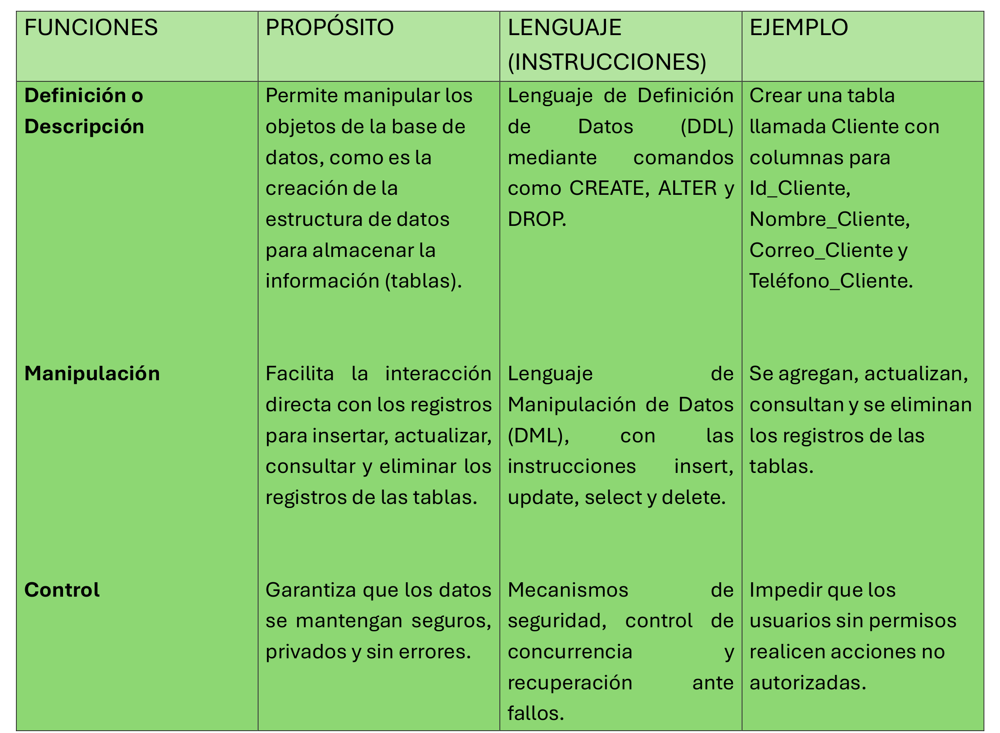
Tabla 1 Funciones del SMBDR
1.2 Modelo relacional y las 12 reglas de Codd
¿Cómo guardarías la información de docentes, alumnos, secuencias y unidades de aprendizaje sin que se repitan datos o se pierda información?
Para poder contestar la anterior pregunta, es importante tener identificado el espacio donde se va a almacenar dicha información, para las bases de datos relacionales la estructura de datos que se utiliza para guardar dicha información son los arreglos bidimensionales (matrices, comúnmente conocidas como tablas).
Para comprender que es el modelo relacional de bases de datos, primeramente, tenemos que identificar que significa. Este modelo fue propuesto por Edgar F. Codd en 1970, y se encarga de organizar la información en relaciones (conocidas como tablas) compuestas por filas y columnas, permitiendo conectar datos mediante claves.
Las reglas del modelo relacional son muy importantes porque permiten:
- Consistencia y orden: Evita la duplicidad y asegura que los datos guarden coherencia mediante reglas de integridad.
- Estandarización con SQL: Permite realizar consultas potentes, complejas y seguras basadas en el álgebra relacional.
- Base de la tecnología actual: Sigue siendo el estándar principal en la industria para la gran mayoría de sistemas transaccionales y aplicaciones empresariales a través de motores como MySQL, PostgreSQL, Oracle o SQL Server.
1.3 Componentes y ambiente de trabajo
Un SMBDR es como un taller mecánico con herramientas (software), autos (datos), mecánicos (usuarios) y un manual de trabajo (reglas). Casi siempre trabaja en modo cliente y servidor. Los clientes mandan sus pedidos en SQL por la red y el servidor los atiende uno por uno para que no se pierda ningún dato.
En la siguiente tabla 2 se muestran las partes del servidor de un SMBDR:
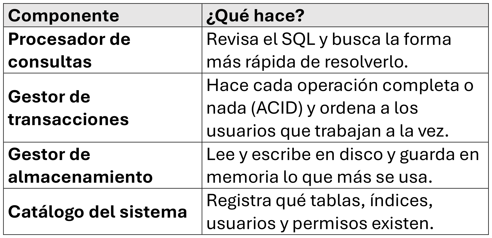
Tabla 2 partes del servidor de un SMBDR
La siguiente figura demuestra como se lleva a cabo la relación entre los clientes con el servidor de un SMBDR
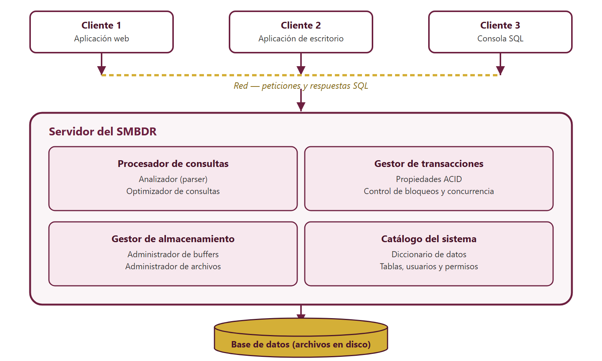
Figura 1 Relación cliente y servidor de un SMBDR
1.4 Estructura de almacenamiento y objetos
Una base de datos es como un edificio de archivo. El edificio es la base de datos, cada piso es un esquema y los archiveros son los objetos, como tablas, vistas e índices. En el sótano están los archivos del disco. Así, cada objeto tiene una parte lógica, la que manejas con SQL, y una parte física, la que se guarda en el disco.
Una base de datos define cómo se organizan, guardan y recuperan los datos de forma eficiente. Este diseño se divide en dos niveles principales: la arquitectura física (almacenamiento) y la arquitectura lógica (objetos). En la siguiente figura se presenta como está constituida la estructura jerárquica de una base de datos:
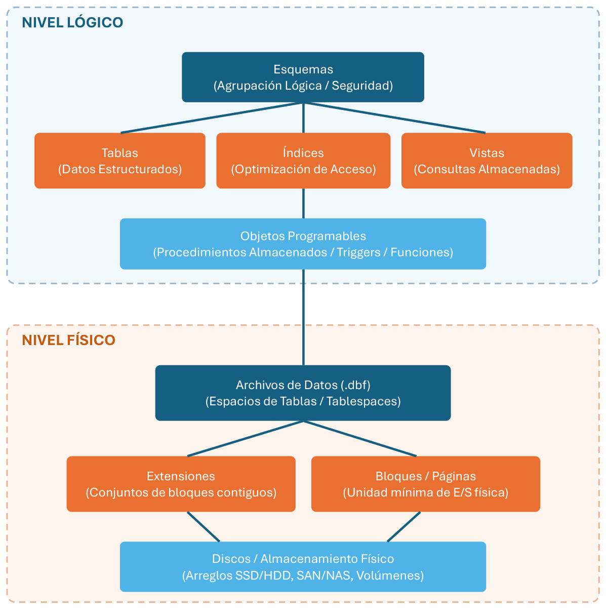
Figura 2 estructura jerárquica de una base de datos
1.5 Instrucciones estándar de lenguaje estructurado de consulta (Structured Query Language/SQL)
Antes de continuar, es importante recordar las fases para el diseño de una base de datos relacional.
El diseño de una base de datos relacional pasa por tres fases principales:
- Diseño Conceptual:
- Se analizan los requisitos del negocio o sistema.
- Se crea un Diagrama Entidad-Relación (DER) definiendo entidades, primary key, atributos y cardinalidades (1:1, 1:N, N:M).
- Diseño Lógico:
- Se transforma el diagrama conceptual (DER) en el modelo relacional (tablas, tuplas, campos, dominio, claves primarias y foráneas).
- Diseño Físico
- El modelo relacional se implementa en un Sistema Manejador de Bases de Datos Relacional (SMBDR) utilizando SQL (Structured Query Language)
Para llevar a cabo las fases del diseño de una base de datos iniciaremos con el diseño conceptual considerando el siguiente caso:
Una clínica veterinaria quiere llevar el control de sus pacientes. Cada dueño registra a una o varias mascotas. Cada mascota puede tener muchas consultas y cada consulta la atiende un solo veterinario. En una consulta se pueden recetar varios medicamentos, y un mismo medicamento aparece en muchas consultas. De cada receta se guarda la cantidad y las indicaciones. El diagrama entidad relación (DER) quedaría representado en la siguiente figura 3:
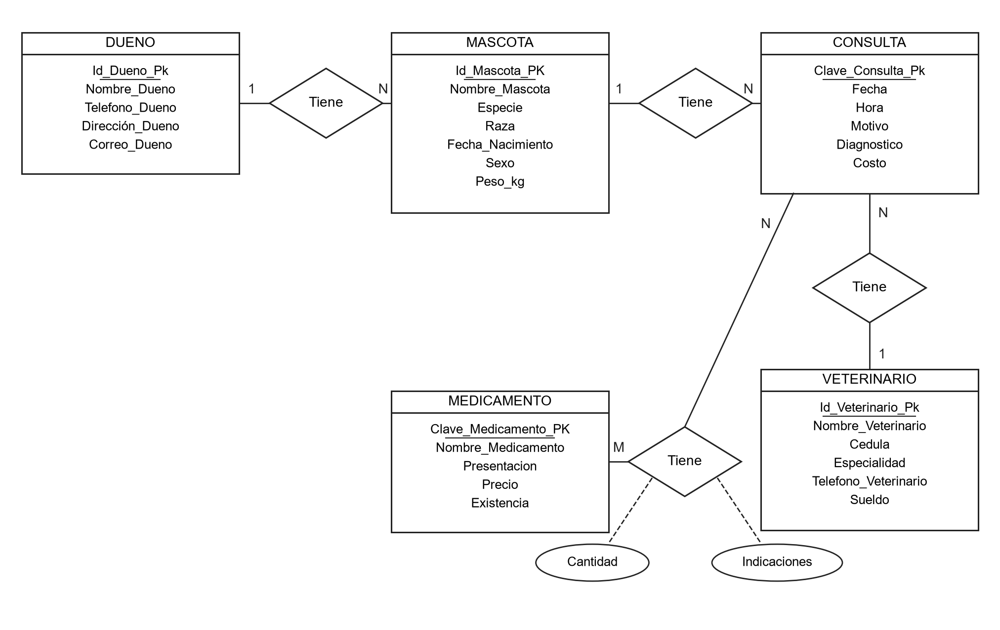
Figura 3 Diagrama Entidad Relación (DER)
La segunda fase del diseño de una base de datos es el diseño lógico, que consiste en transformar el diseño conceptual (DER) a un modelo relacional.
Es necesario cumplir con los siguientes pasos para transformar el DER a un modelo relacional:
- Cada entidad se convierte en una relación (tabla).
- Los atributos de la entidad se convierten en columnas.
- El identificador pasa a ser la clave primaria (subrayada).
- La cardinalidad de 1:N (uno a muchos) en el lado de la entidad que tiene 1 (uno) hereda su llave primaria a la entidad que tiene M (muchos) convirtiéndose en llave foránea
- La cardinalidad de M:N (se genera una relación (tabla) intermedia, que contiene las llaves primarias de ambas relaciones que se convierte en llaves foráneas.
Aplicando los pasos anteriores, el diseño lógico quedaría de la siguiente forma:
Veterinario (Id_Veterinario_PK, Nombre_Veterinario, Cedula, Especialidad, Telefono_Veterinario, Sueldo)
Medicamento (Clave_Medicamento_PK, Nombre_Medicamento, Presentacion, Precio, Existencia)
Dueno (Id_Dueno_PK, Nombre_Dueno, Telefono_Dueno, Dirección_Dueno, Correo_Dueno)
Mascota (Id_Mascota_PK, Nombre_Mascota, Especie, Raza, Fecha_Nacimiento, Sexo, Peso_kg, Id_Dueno_FK)
Consulta (Clave_Consulta_Pk, Fecha, Hora, Motivo, Diagnostico, Costo, Id_Mascota_FK, Id_Veterinario_FK)
Consulta_Medicamento (Clave_Consulta_FK, Clave_medicamento_FK, Cantidad, Indicaciones)
La tercera fase del diseño de una base de datos es el diseño físico, que consiste en convertir el modelo relacional (el anterior diseño lógico) a un esquema físico, es la creación física de la base de datos utilizando las instrucciones del SQL de un SMBDR.
Para continuar, primeramente, debemos comprender en que consiste el SQL.
El SQL (Lenguaje de Consulta Estructurado) es el lenguaje estándar universal diseñado para administrar, manipular y recuperar datos. El SQL es el lenguaje principal que se utiliza en los Sistemas Manejadore de Bases de Datos Relacionales (SBMDR).
El propósito del SQL es proporcionar una interfaz unificada y declarativa para interactuar con bases de datos relacionales, permitiendo a los usuarios indicar qué datos desean consultar.
Aunque han surgido tecnologías NoSQL, SQL sigue siendo la columna vertebral del análisis de datos, el desarrollo de software empresarial y los sistemas transaccionales a nivel mundial.
El diseño de SQL es modular y se divide en tres sublenguajes específicos según la tarea que se va a realizar sobre los objetos y los datos. A continuación, se muestra la figura 4 que representa los tres sublenguajes de SQL:
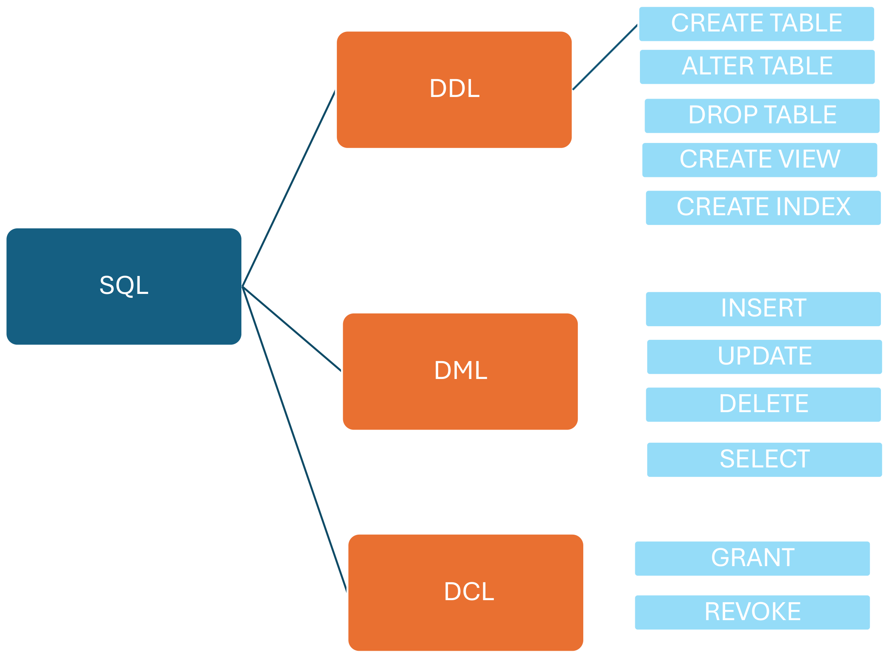
Figura 4 sublenguajes de SQL
A. Lenguaje de Definición de Datos (DDL - Data Definition Language)
Se encarga del diseño estructural y la creación de los objetos de la base de datos (tablas, índices, vistas).
- CREATE: Crea nuevos objetos (bases de datos, tablas, vistas, índices, procedures, triggers, transacciones).
- ALTER: Modifica la estructura de un objeto existente (añadir o elimina una columna).
- DROP: Elimina un objeto de la base de datos (tabla).
Para poder iniciar la creación de las tablas, es necesario conocer los tipos de datos que utiliza SQL. En la siguiente tabla 3 se exponen los tipos de datos:
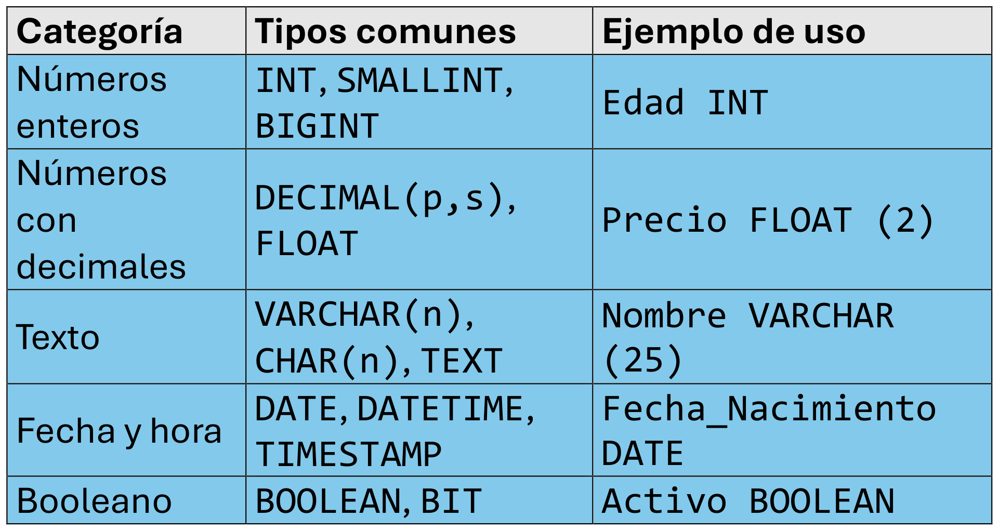
Tabla 3 tipos de datos de SQL
Es el momento de empezar a utilizar las instrucciones del DDL de SQL, usando el SMBDR SQL Server Management Studio (opcional) vamos a iniciar creando la base de datos y la creación de las tablas, todas las instrucciones serán mostradas con scripts como se ve a continuación:
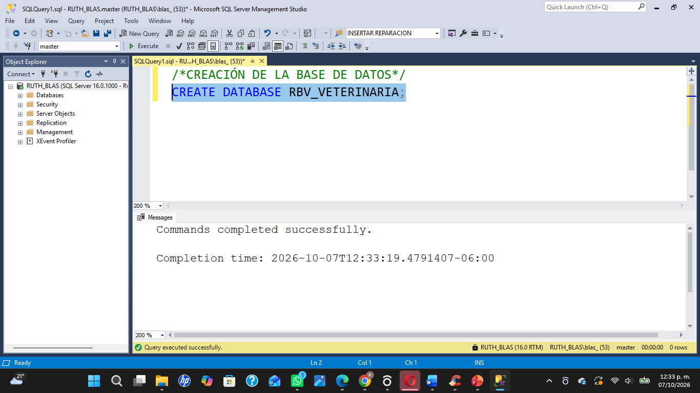
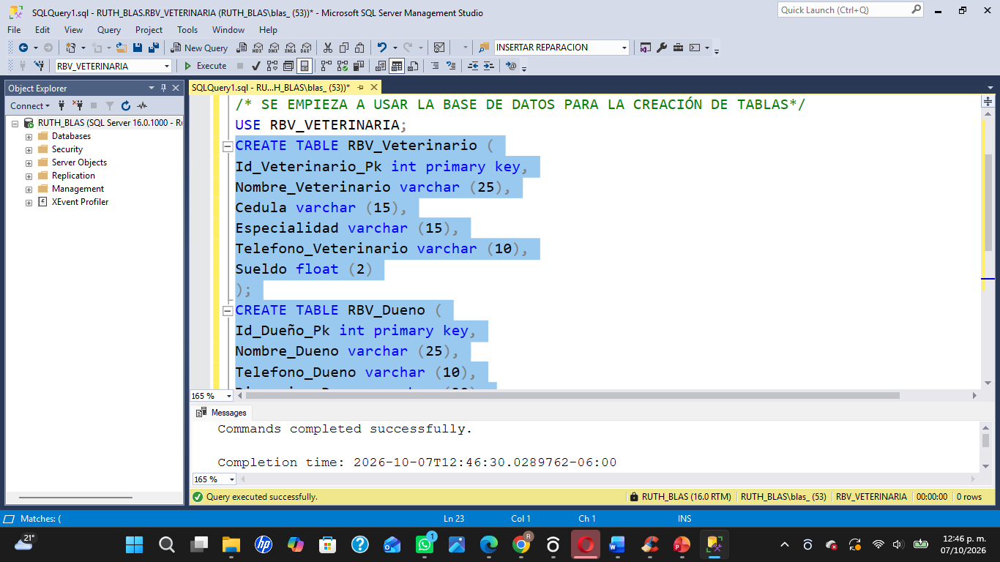
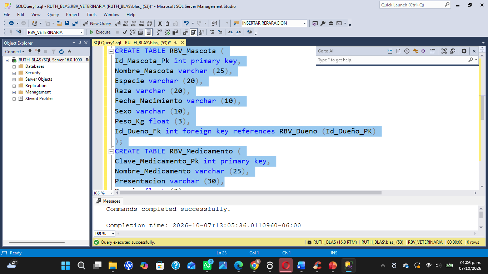
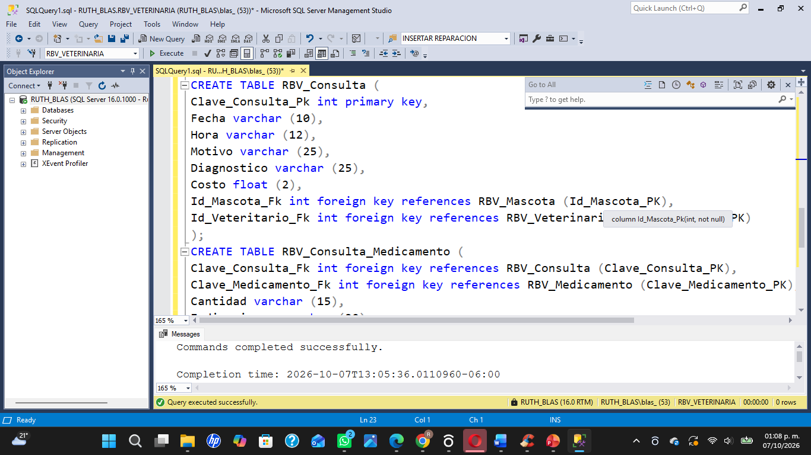